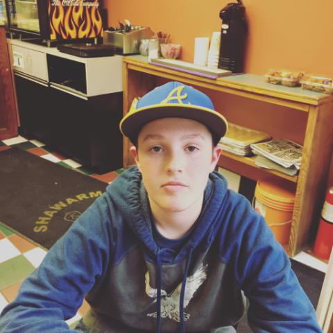

Jared Brudner ePortfolio
Home
My Goals
As of today, my goal is to attend one of the following colleges: Worcester Polytechnic Institute, Wentworth Institute of Technology, or Providence College. After more research and college tours, I am guessing I will have more to add to the list of colleges I wish to attend. In order to have a chance at getting accepted to these universities, my goal is to also earn high honors my junior and senior year. I hope to qualify for the state golf tournament as a Junior and Senior Varsity athlete. I am going to practice a lot of golf this summer so that I am ready for the fall. After college, I picture myself getting involved in Software Development, along with Finance.
“You never fail until you stop trying.” -Albert Einstein
Questions? Comments? Feedback? Click Here
Assabet. Do. More. Jared Brudner